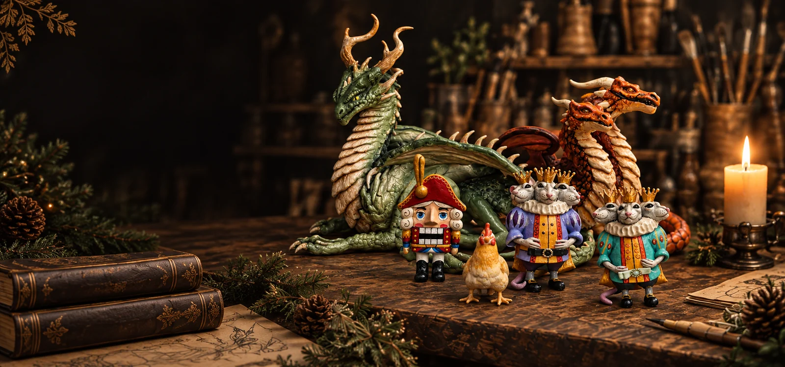
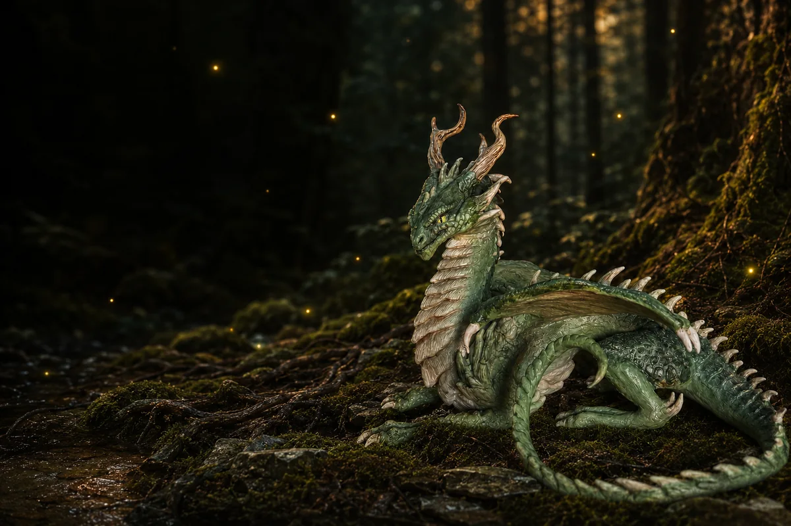

Мастерская Веры
Сказки, которые
можно взять в руки
Авторские фигурки ручной работы

Вера создаёт каждого Жителя — от идеи до последнего штриха.

Руки и материал
Работа начинается не с витрины, а с идеи и формы
Полимерная глина, каркас из фольги и проволоки, ручная обработка, акриловая роспись, защитное покрытие и маленькие детали — путь каждого Жителя зависит от его характера.
Мастерская сегодня
Из чего она состоит
Как здесь работают
Три вещи, которые не меняются
Никаких форм и тиражей
Каждый Житель лепится заново, поэтому двух одинаковых не бывает: даже у одного персонажа поза, взгляд и оттенки всегда получаются своими.
Разговор вместо конструктора
Вера отвечает сама — без менеджеров и анкет. Будущего Жителя обсуждают словами: характер, настроение, цвет, повод.
У работы есть история
Каждый Житель получает имя, характер и Хронику. Она остаётся на сайте и после того, как он уедет к своему Хранителю.
Миры мастерской
Пять миров — пять разных историй
Мир 01 · 4 Жителя
Зимние легенды
Синий вечер, снег на еловых лапах и тёплый свет в окне. Мир, где ждут чуда и слышат музыку.
Войти в мирМир 02 · 2 Жителя
Тайны древнего леса
Сумрак между корнями, мох, папоротник и огоньки, которые зажигаются сами. Здесь говорят вполголоса.
Войти в мирМир 03 · 3 Жителя
Древние существа
Чешуя, крылья и память о временах, которых не застал никто. Мир тех, кто старше сказок.
Войти в мирМир 04 · 5 Жителей
Русские сказки
Резной терем, синие цветы по золоту и вязь до самого вечера. Мир, где сказку рассказывают на ночь.
Войти в мирМир 05 · 3 Жителя
Домашние легенды
Солнце на деревянном полу, лён и тишина. Не каждая легенда должна рычать.
Войти в мирЧастые вопросы
Можно ли заказать фигурку, которой ещё нет в списке?+
Да. Напишите Вере, расскажите, кого вы хотите. Если идея совпадает с текущей работой — возможно, Житель уже рождается. Если нет — обсудим, будет ли он рождаться в мастерской.
Какой срок изготовления?+
Срок зависит от размера, сложности и текущей загрузки мастерской. Вера подскажет ориентир по конкретной работе в переписке.
Есть ли доставка?+
Да, доставка по России. Каждый Житель упаковывается вручную: крепкая коробка, надёжная обёртка, лента. Стоимость и сроки уточняются в переписке.
Можно ли повторить того Жителя, который уже уехал?+
Некоторые образы Вера делает в нескольких экземплярах — это видно по карточке. Но точной копии не будет: каждую фигурку лепят и расписывают вручную. Возможность нового экземпляра лучше уточнить у Веры.
Из чего сделаны фигурки?+
Полимерная глина, каркас из фольги и акриловые краски. По уходу за конкретной фигуркой Вера подскажет отдельно.
Найти своего Жителя
Возможно, он уже ждёт вас в Мастерской.
Написать Вере